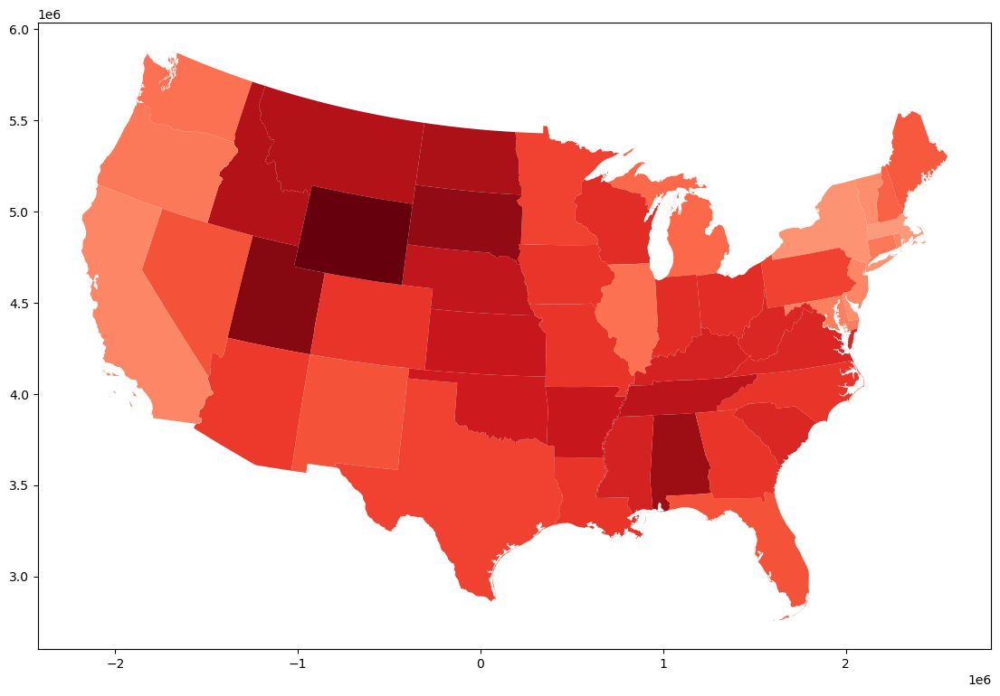

import geopandasMoran’s I
gdf = geopandas.read_parquet('repub_lean.parquet')gdf.plot()<AxesSubplot:>
gdf.plot(column='rep_int', cmap='Reds', figsize=(16,9))<AxesSubplot:>
import matplotlib.pyplot as pltf, axs = plt.subplots(1, 2, figsize=(16, 9))
ax1, ax2 = axs
gdf.plot(column='rep_int',
cmap='Reds',
scheme='quantiles',
k=5,
edgecolor='grey',
linewidth=0.1,
alpha=0.75,
legend=True,
legend_kwds={'loc': 'lower left'},
ax =ax1,
)
ax1.set_axis_off()
ax1.set_title("Leaning Republican")
gdf.plot(column='lag_rep_int',
cmap='Reds',
scheme='quantiles',
k=5,
edgecolor='grey',
linewidth=0.1,
alpha=0.75,
legend=True,
legend_kwds={'loc': 'lower left'},
ax =ax2,
)
ax2.set_axis_off()
ax2.set_title("Spatial Lag Leaning Republican")Text(0.5, 1.0, 'Spatial Lag Leaning Republican')
import seaborn as sns
_ = sns.regplot(x='rep_int', y='lag_rep_int', data=gdf)
plt.axhline(y=gdf.lag_rep_int.mean(), color='g', linestyle='--')
plt.axvline(x=gdf.rep_int.mean(), color='g', linestyle='--')<matplotlib.lines.Line2D at 0x7f484009e280>gdf.head()| index | GEO_ID | STATE | state | LSAD | CENSUSAREA | geometry | Rep | No lean | Democrat/lean Dem. | Sample\tsize | rep_int | queen_neighbors | lag_rep_int | |
|---|---|---|---|---|---|---|---|---|---|---|---|---|---|---|
| 0 | 0 | 0400000US23 | 23 | Maine | 30842.923 | MULTIPOLYGON (((2516172.424 5253443.650, 25164... | 36% | 17% | 47% | 303 | 36 | 1 | 35.00 | |
| 1 | 1 | 0400000US25 | 25 | Massachusetts | 7800.058 | MULTIPOLYGON (((2351724.597 4850457.653, 23526... | 27% | 17% | 56% | 704 | 27 | 5 | 30.80 | |
| 2 | 2 | 0400000US26 | 26 | Michigan | 56538.901 | MULTIPOLYGON (((821167.988 5338182.388, 821794... | 34% | 19% | 47% | 982 | 34 | 3 | 42.00 | |
| 3 | 3 | 0400000US30 | 30 | Montana | 145545.801 | POLYGON ((-371533.418 5042503.702, -386687.255... | 49% | 21% | 30% | 312 | 49 | 4 | 52.25 | |
| 4 | 4 | 0400000US32 | 32 | Nevada | 109781.180 | POLYGON ((-1384104.733 4308747.816, -1385163.9... | 37% | 18% | 46% | 314 | 37 | 5 | 41.00 |
y = gdf.rep_int
ylag = gdf.lag_rep_int
yh = y > y.mean()
ylh = ylag > ylag.mean()q = 1 * yh * ylh + (2 * (1-yh) * ylh) + (3 * (1-yh) * (1-ylh))
q[q==0] = 4gdf['q'] = qf, axs = plt.subplots(2,2, figsize=(16, 9))
ax1 = axs[0,0]
ax2 = axs[0,1]
ax3 = axs[1,0]
ax4 = axs[1,1]
gdf.plot(column='rep_int',
cmap='Reds',
scheme='quantiles',
k=5,
edgecolor='grey',
linewidth=0.1,
alpha=0.75,
legend=True,
legend_kwds={'loc': 'lower left'},
ax =ax1,
)
ax1.set_axis_off()
ax1.set_title("Leaning Republican")
gdf.plot(column='lag_rep_int',
cmap='Reds',
scheme='quantiles',
k=5,
edgecolor='grey',
linewidth=0.1,
alpha=0.75,
legend=True,
legend_kwds={'loc': 'lower left'},
ax =ax2,
)
ax2.set_axis_off()
ax2.set_title("Leaning Republican Spatial Lag")
gdf.plot(column='q',
categorical=True,
edgecolor='grey',
linewidth=0.1,
alpha=0.75,
legend=True,
legend_kwds={'loc': 'lower left'},
ax =ax3,
)
ax3.set_axis_off()
_= ax3.set_title("Moran Scatterplot Quadrant")
_ = sns.regplot(x='rep_int', y='lag_rep_int', data=gdf, ax=ax4)
plt.axhline(y=gdf.lag_rep_int.mean(), color='g', linestyle='--')
plt.axvline(x=gdf.rep_int.mean(), color='g', linestyle='--')
_= ax4.set_title("Moran Scatterplot")\[ I = \frac{n}{\sum_i \sum_j w_{i,j}} \frac{\sum_i \sum_j w_{i,j} z_i z_j} {\sum_i z_i^2} \] where \(n\) is the number of observations, \(z_i = y_i - \bar{y}\), and \(w_{i,j}\) is the cell corresponding to the \(i\)-th row and \(j\)-th column of the spatial weights matrix.
from esda.moran import Moran
import libpysaly = gdf.rep_int
w = libpysal.weights.Queen.from_dataframe(gdf)
mi = Moran(y, w)mi.EI-0.020833333333333332mi.EI_sim-0.018233960161648737mi.p_sim0.001import seaborn
ax = seaborn.histplot(mi.sim)
_ = plt.axvline(mi.I, 0, 100, color='r')A closer look at permutation based inference
import numpygdf.shape(49, 15)ids = numpy.arange(49)idsarray([ 0, 1, 2, 3, 4, 5, 6, 7, 8, 9, 10, 11, 12, 13, 14, 15, 16,
17, 18, 19, 20, 21, 22, 23, 24, 25, 26, 27, 28, 29, 30, 31, 32, 33,
34, 35, 36, 37, 38, 39, 40, 41, 42, 43, 44, 45, 46, 47, 48])numpy.random.seed(12345) # for reproducibility
rids = numpy.random.permutation(ids)ridsarray([44, 21, 12, 40, 35, 8, 20, 33, 32, 2, 31, 38, 22, 30, 42, 26, 19,
5, 3, 15, 0, 4, 39, 25, 24, 23, 28, 43, 7, 6, 18, 17, 10, 13,
11, 9, 16, 27, 14, 45, 46, 48, 47, 41, 36, 1, 29, 37, 34])y = gdf.rep_int.valuesyarray([36, 27, 34, 49, 37, 30, 28, 41, 42, 39, 30, 48, 39, 54, 33, 42, 31,
52, 40, 46, 30, 41, 32, 29, 11, 37, 41, 49, 33, 42, 41, 46, 44, 41,
39, 44, 41, 47, 35, 37, 50, 45, 32, 43, 53, 29, 43, 43, 57])y[rids]array([53, 41, 39, 50, 44, 42, 30, 41, 44, 34, 46, 35, 32, 41, 32, 41, 46,
30, 49, 42, 36, 37, 37, 37, 11, 29, 33, 43, 41, 28, 40, 52, 30, 54,
48, 39, 31, 49, 33, 29, 43, 57, 43, 45, 41, 27, 42, 47, 39])yr = y[rids]from libpysal.weights import lag_spatialw.transform='r'lag_yr = lag_spatial(w, yr)gdf['lag_yr'] = lag_yr
gdf['yr' ]= yryh = yr > y.mean()
ylh = lag_yr > lag_yr.mean()
q = 1 * yh * ylh + (2 * (1-yh) * ylh) + (3 * (1-yh) * (1-ylh))
q[q==0] = 4
gdf['qr'] = qgdf.qr0 4
1 4
2 3
3 1
4 1
5 4
6 3
7 4
8 4
9 2
10 4
11 3
12 2
13 1
14 2
15 1
16 4
17 3
18 4
19 1
20 2
21 2
22 3
23 2
24 2
25 3
26 3
27 1
28 4
29 3
30 1
31 1
32 3
33 4
34 1
35 2
36 2
37 1
38 2
39 2
40 1
41 4
42 4
43 4
44 1
45 3
46 4
47 4
48 2
Name: qr, dtype: int64
mir = Moran(yr, w)f, axs = plt.subplots(2,2, figsize=(16, 9))
ax1 = axs[0,0]
ax2 = axs[0,1]
ax3 = axs[1,0]
ax4 = axs[1,1]
gdf.plot(column='yr',
cmap='Reds',
scheme='quantiles',
k=5,
edgecolor='grey',
linewidth=0.1,
alpha=0.75,
legend=True,
legend_kwds={'loc': 'lower left'},
ax =ax1,
)
ax1.set_axis_off()
ax1.set_title("Leaning Republican - Random")
gdf.plot(column='lag_yr',
cmap='Reds',
scheme='quantiles',
k=5,
edgecolor='grey',
linewidth=0.1,
alpha=0.75,
legend=True,
legend_kwds={'loc': 'lower left'},
ax =ax2,
)
ax2.set_axis_off()
ax2.set_title("Leaning Republican Spatial Lag - Random")
gdf.plot(column='qr',
categorical=True,
edgecolor='grey',
linewidth=0.1,
alpha=0.75,
legend=True,
legend_kwds={'loc': 'lower left'},
ax =ax3,
)
ax3.set_axis_off()
_= ax3.set_title("Moran Scatterplot Quadrant - Random")
_ = sns.regplot(x='yr', y='lag_yr', data=gdf, ax=ax4)
plt.axhline(y=gdf.lag_rep_int.mean(), color='g', linestyle='--')
plt.axvline(x=gdf.rep_int.mean(), color='g', linestyle='--')
_= ax4.set_title("Moran Scatterplot")mir.p_sim0.385mi.I, mir.I(0.4648896481706091, -0.049619432153642166)How many random permutations (maps) can we conceivably make?
\[n!\]
gdf.shape(49, 18)import mathmath.factorial(49)608281864034267560872252163321295376887552831379210240000000000f'{float(math.factorial(49)):.2}''6.1e+62'1000 / 10010.06.1e+62 / 1e+60610.0f'There are {6.1e+62 / 1e+60} Novemdecillion possible random maps we could generate.''There are 610.0 Novemdecillion possible random maps we could generate.'Fastest computer today
2 quintrillion calculations per second
A quintrillion is \(10^{18}\)
seconds = 6.1e+62/1e+18
print(f'Using the fastest computer we have today, we would need {seconds} seconds to generate all such maps')Using the fastest computer we have today, we would need 6.1e+44 seconds to generate all such maps13.7e+9 # years since the big bang13700000000.0histories = seconds / (13.7e+9 * 60 * 60 * 24 * 365)print(f'We would need to string together {histories} periods of length since the Big Bang in order to do this!')We would need to string together 1.411895847452292e+27 periods of length since the Big Bang in order to do this!